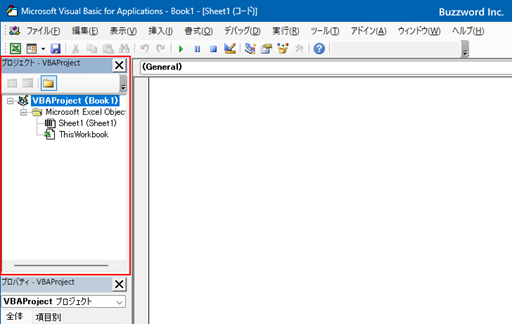
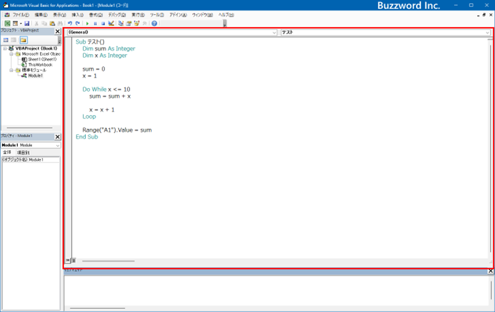

Excel
は、多くの人々が日常的に使用する強力なツールです。その中で、VBA
(Visual Basic for Applications) は、Excel
をさらに強力にカスタマイズし、自動化するためのプログラミング言語です。VBA
を使用することで、繰り返し作業を効率化したり、複雑な計算を自動化したり、独自の関数やフォームを作成することが可能になります。
このドキュメントでは、VBAの基礎から応用までを網羅的に解説します。プログラミング初心者の方から、より高度なカスタマイズを目指す方まで、幅広い層に役立つ情報を提供します。VBA
を学ぶことで、Excel
の操作がさらに快適になり、業務の効率化が図れます。しっかり勉強していきましょう！
VBA (Visual Basic for Applications) と VB (Visual Basic)
は、どちらも Microsoft
が開発したプログラミング言語ですが、使用目的や機能にいくつかの違いがあります。
VBA (Visual Basic for Applications)
VBA は、主に Microsoft Office 製品（Excel、Word、Access
など）の内部で使用されるスクリプト言語です。以下の点が特徴です：
Office アプリケーションの自動化: VBA は、Excel などの Office
アプリケーション内でのタスク自動化に特化しています。ユーザーが繰り返し行う作業を自動化するマクロの作成が可能です。
組み込み環境: VBA は、各 Office
アプリケーションに組み込まれているため、別途インストールする必要はありません。
簡便性: VBA
のコードは比較的シンプルで、プログラミング初心者でも学びやすい設計です。
VB (Visual Basic)
一方、VB
はスタンドアロンのプログラムやアプリケーションを開発するためのフル機能のプログラミング言語です。以下の点が特徴です：
汎用プログラミング: VB は、Windows
アプリケーションの開発に広く使用される汎用プログラミング言語です。独自のアプリケーションやツールを作成することができます。
環境: VBA は Office 製品内で使用されますが、VB は Visual Studio
という統合開発環境で使用されます。
機能: VB は、VBA
よりも多くの機能と柔軟性を持ち、より複雑なアプリケーションの開発が可能です。
変数
変数はデータを一時的に格納するための記憶場所です。VBA
では、変数を使用してデータを操作したり計算したりします。変数の宣言方法やデータ型について理解することが重要です。
データ型
VBAでは、変数には特定のデータ型を割り当てる必要があります。代表的なデータ型には、整数（Integer）、長整数（Long）、浮動小数点数（Double）、文字列（String）などがあります。正しいデータ型を選択することで、プログラムの効率が向上します。
定数
定数は一度設定されたら変更されない値です。定数を使用することで、プログラムの可読性が向上し、誤りが減少します。
演算子
演算子は、数値や文字列などのデータを操作するための記号やキーワードです。代表的な演算子には、四則演算子（+、-、*、/）、比較演算子（=、＜、＞）、論理演算子（And、Or、Not）などがあります。
制御構文
プログラムの流れを制御するための構文です。条件分岐（If...Then...Else）、ループ（For...Next、While...Wend、Do...Loop）などが代表的です。制御構文を使いこなすことで、複雑な処理を効率的に実行できます。
関数
関数は、特定の処理を実行し、その結果を返す一連のコードです。VBA
には、標準関数（例えば、数値の四捨五入を行う Round
関数）や、自作関数を作成する機能があります。
プロシージャ
プロシージャは、特定の処理を実行するための手続きです。サブルーチン（Sub）と関数（Function）の2種類があり、それぞれの違いを理解して使い分けることが重要です。
プロジェクトエクスプローラー

プロジェクトエクスプローラーは、現在のブック内のすべての VBA
プロジェクトとその要素（モジュール、フォーム、クラス）を一覧表示します。ここから各要素にアクセスして編集することができます。
プロパティウィンドウ
プロパティウィンドウは、選択したオブジェクトのプロパティを表示および編集するためのウィンドウです。例えば、ユーザーフォームやコントロールの外観や動作をカスタマイズできます。
コードウィンドウ

コードウィンドウは、VBA
プロジェクト内のモジュールやフォームのコードを表示および編集するためのウィンドウです。ここに
VBA コードを入力して、プログラムを作成します。
イミディエイトウィンドウ
イミディエイトウィンドウは、デバッグ時に使用される便利なツールで、コードを実行しながら即座に変数の値を確認したり、スクリプトを実行することができます。例えば、以下のように使用します：
基本概念
変数とは、プログラム内でデータを一時的に保存するための記号的な名前です。変数には数値や文字列などのデータを格納し、後で参照したり操作したりすることができます。
変数の宣言方法
変数を使用する前に、宣言する必要があります。宣言にはキーワード Dim
を使用します。例えば、以下のように宣言します。Dim variableName As DataType
変数の種類（データ型）
Integer：整数（例：1, -5）
Long：大きな整数（例：123456789）
Single：単精度浮動小数点数（例：3.14）
Double：倍精度浮動小数点数（例：3.1415926535）
String：文字列（例："Hello"）
Boolean：論理値（例：True, False）
変数のスコープとライフタイム
変数のスコープとは、変数が有効な範囲を指します。変数のスコープには以下の3種類があります。
ローカルスコープ：プロシージャ内で宣言された変数は、そのプロシージャ内でのみ有効です。
モジュールスコープ：モジュールレベルで宣言された変数（DimまたはPrivateを使用）は、そのモジュール内のすべてのプロシージャで有効です。
グローバルスコープ：モジュールの外で宣言された変数（Publicを使用）は、すべてのモジュールからアクセスできます。
変数の初期化と値の代入
変数を宣言すると、初期値が自動的に設定されます。例えば、数値型の変数は0に、文字列型の変数は空の文字列に初期化されます。変数に値を代入するには、代入演算子
= を使用します。
Dim total As Integer
total = 10
Dim name As String
name = "John Doe"
Dim isActive As Boolean
isActive = True
変数の使い方
変数を使用することで、データを一時的に保存したり、計算したり、操作したりすることができます。例えば、以下のように変数を使用して計算を行います。
Dim num1 As Integer
Dim num2 As Integer
Dim sum As Integer
num1 = 5
num2 = 10
sum = num1 + num2
配列は同じデータ型の複数の値を一つの変数で管理するためのもので、宣言方法は
Dim 配列名(要素数) As データ型
とし、一次元配列や多次元配列を使用して要素にインデックスでアクセスでき、動的配列の場合は
ReDim キーワードを使ってサイズを変更し、例えば Dim scores(10) As
Integer のように宣言し、 scores(0) = 90 のように代入し、 For i = 0
To UBound(scores) Debug.Print scores(i) Next i
のようにループ処理で要素を操作することができます。
定数は一度設定すると変更できないデータのことで、Constキーワードを使って宣言し、例えば
Const PI As Double = 3.14159
のように使用し、定数はプログラムの可読性と保守性を向上させ、不変性により誤って値を変更するリスクを回避でき、また一箇所で定義することでメンテナンスが容易になり、例えば円の面積計算などで意図を明確にすることができます。
演算子は数値やデータを操作するための記号やキーワードで、主な種類として、数値計算を行う算術演算子（例：+足し算、-引き算）、値を比較する比較演算子（例：=等しい、＜＞等しくない）、論理値を操作する論理演算子（例：And両方真、Orどちらか真）、文字列を連結する連結演算子（例：&文字列連結）、および変数に値を代入する代入演算子（例：=代入）があり、例えば
Dim result As Integer = 5 + 3
のように使用し、これらの演算子を駆使してプログラム内で様々な操作を実現します。
関数は特定のタスクや計算を行うためのコードブロックで、引数として入力を受け取り、処理を行い、結果を返すものであり、Excel
VBAでは組み込み関数（例：SUM、AVERAGE）やユーザー定義関数を使用して、例えばデータの集計や特定の計算を効率的に実行することができ、Functionキーワードを使って定義し、End
Functionで終了し、呼び出し元で結果を利用できるため、コードの再利用性と可読性を向上させます。
プロシージャは特定のタスクや機能を実行するためのコードブロックで、Excel
VBAにおいては
Subプロシージャ（引数を返さない）とFunctionプロシージャ（引数を返す）があります。プロシージャは再利用可能なコードを作成し、複数の場所から呼び出して使用することができ、プログラムの可読性と保守性を向上させるために使用され、例えば
Sub CalculateTotal() のようにSubキーワードを使って定義し、End
Subで終了し、プロシージャ内で変数の操作や他のプロシージャの呼び出しを行うことができ、呼び出し元では
Call CalculateTotal または単に CalculateTotal として実行します。
制御構文は、プログラムの実行フローを制御するための手法です。プログラム内の処理を条件に基づいて分岐させたり、繰り返し処理を行うことができます。主な制御構文には以下の種類があります：
If文: 条件が真の場合に特定の処理を実行します。
If condition Then
' 条件が真のときの処理
Else
' 条件が偽のときの処理
End If
Select Case文:
変数の値に応じて複数の処理の中から適切な処理を選択します。
Select Case expression
Case value1
' value1 のときの処理
Case value2
' value2 のときの処理
Case Else
' それ以外のときの処理
End Select
Forループ: 指定した回数だけ繰り返し処理を行います。
For counter = start To end
' 繰り返し処理
Next counter
Whileループ: 条件が真の間、繰り返し処理を行います。
While condition
' 繰り返し処理
Wend
Excel
VBAのデバッグは、コードのエラーを見つけて修正するための重要な作業です。デバッグモードに入ると、エラーが発生した行がハイライトされ、コードの修正が可能になります。ブレークポイントを設定することで、特定の行でコードの実行を一時停止し、変数の値やコードの動作を確認できます。また、ステップ実行を使ってコードを一行ずつ実行しながら動作を確認することができ、変数の監視ウィンドウを使用して、変数の値をリアルタイムで確認できます。エラーメッセージはエラーの原因を特定するための重要な情報源であり、Immediateウィンドウを使用して直接コードを実行したり、変数の値を確認したりできます。これらの方法を組み合わせて使用することで、Excel
VBAのデバッグを効率的に行うことができます。